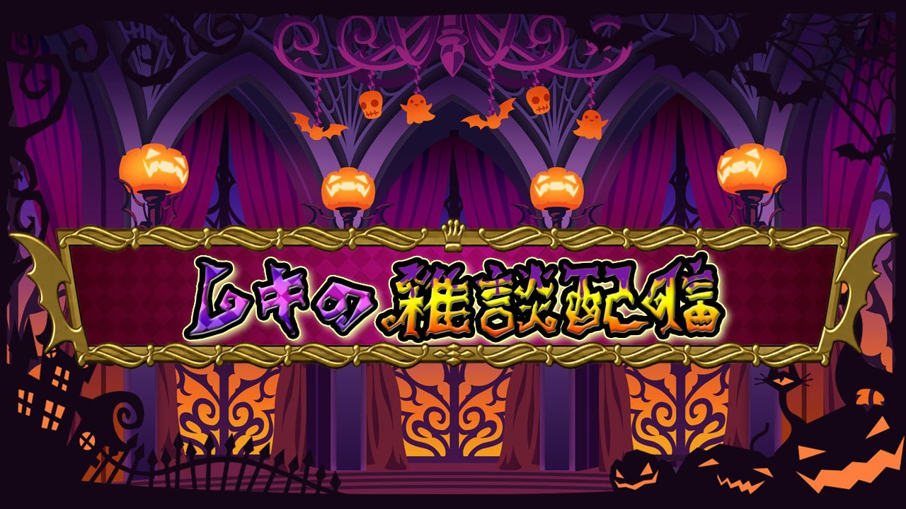
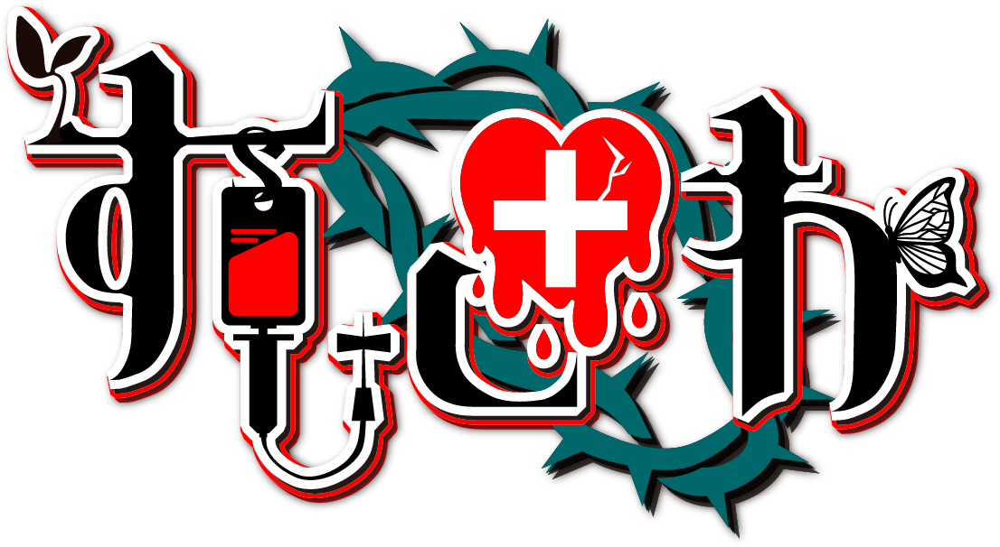
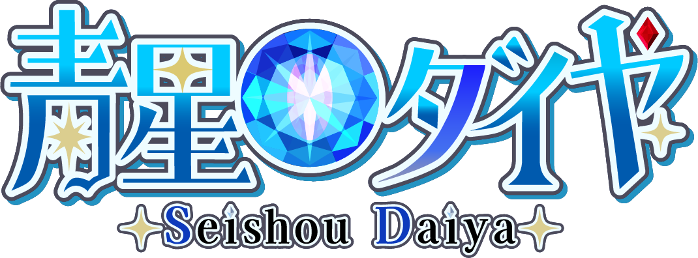
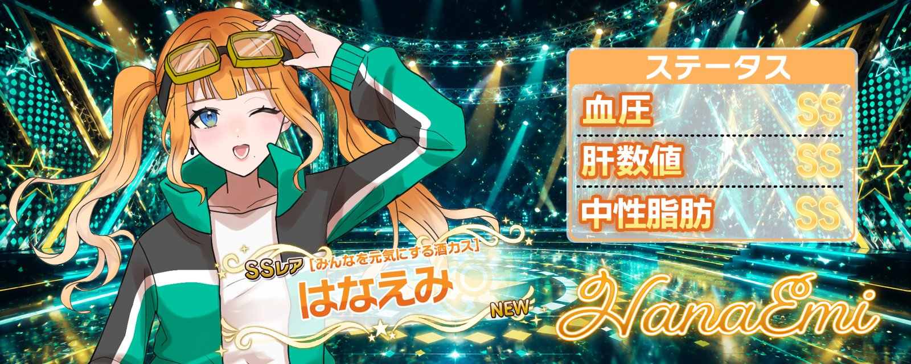

（仮）VTuber・配信者さま向けに、ロゴ制作・サムネイル・ヘッダー・切り抜き動画の編集をしています。ここの文言はあとで差し替え。
クリックで拡大
ホラーゲーム実況（説明文は仮）
季節テーマの雑談枠（説明文は仮）


チャンネルロゴ（説明文は仮）


Xヘッダー（説明文は仮）
YouTube Shorts／TikTok の埋め込みをここに並べる予定
（仮）料金・納期・連絡先はあとで入れる